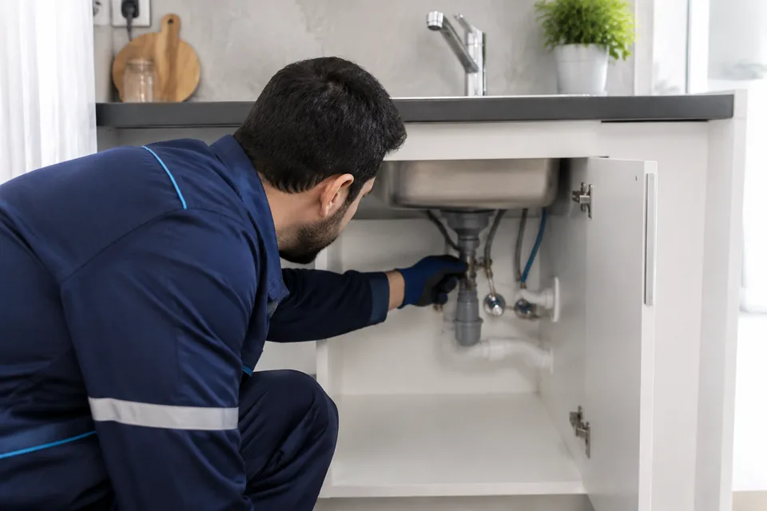
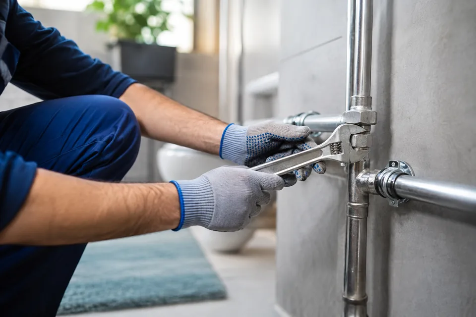
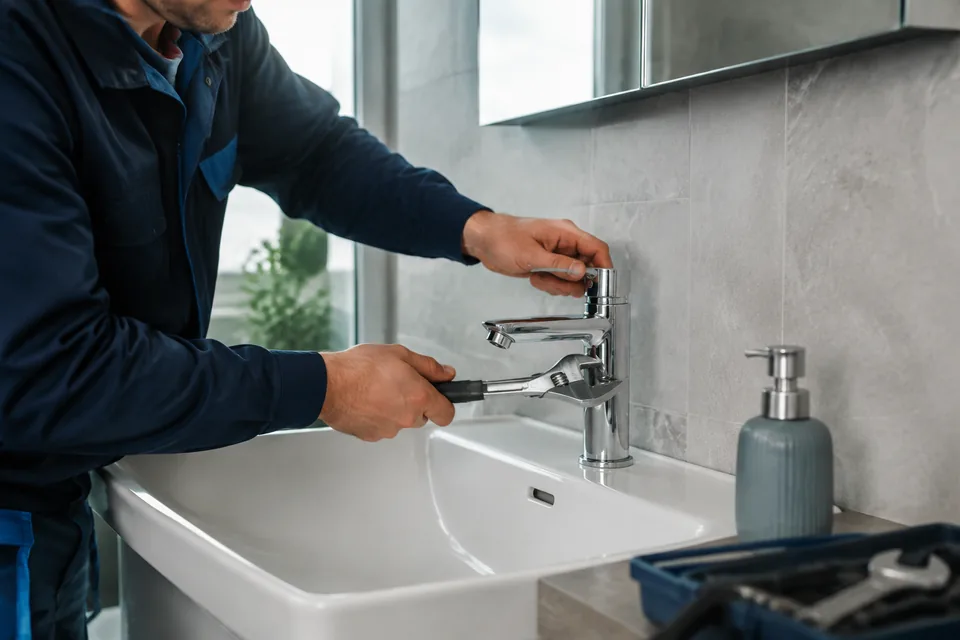
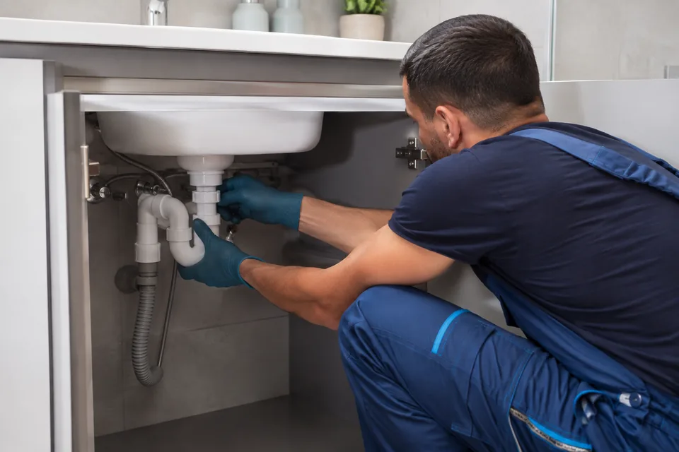
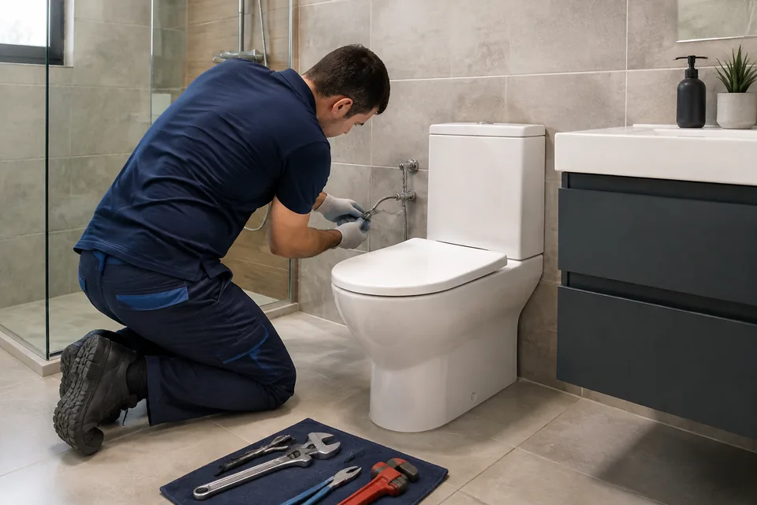
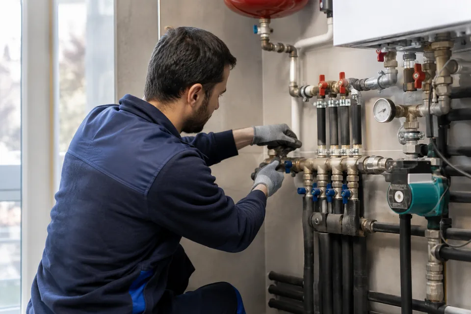

Su Tesisatı
Temiz ve kullanma suyu tesisatlarında oluşan problemlerin bakım ve onarımı.
Hizmet için araKepez · Muratpaşa · Konyaaltı · Döşemealtı
Acil tesisat ihtiyacınız mı var? Su tesisatı, musluk ve gider sorunları için Erkan Aldemir ile doğrudan görüşün; konumunuzu ve sorununuzu paylaşın.
Pzt–Cmt 09.00–19.00 · Pazar kapalı
Acil taleplerde servis uygunluğunu telefonla öğrenin.
Google değerlendirmeleriMüşteri deneyimlerini inceleyin →
Pazartesi–Cumartesi09.00–19.00 · Pazar kapalı
Yol tarifi alınKültür, Kepez / Antalya
→Hizmetlerimiz
Bakım ve onarımdan yeni uygulamalara kadar, yaşam alanınız için doğru ve güvenilir tesisat desteği.

Temiz ve kullanma suyu tesisatlarında oluşan problemlerin bakım ve onarımı.
Hizmet için ara
Tesisat sistemlerinde meydana gelen arızaların doğru tespiti ve onarımı.
Hizmet için ara
Arızalı veya eski musluk ve bataryaların tamir ve değişim işlemleri.
Hizmet için ara
Lavabo ve gider sistemlerinde meydana gelen tesisat problemlerine çözüm.
Hizmet için ara
Banyo ve WC alanlarında tesisat bakım, onarım ve yenileme hizmetleri.
Hizmet için ara
Yaşam ve çalışma alanları için ihtiyaç duyulan tesisat uygulamaları.
Hizmet için araNeden Emir Tesisat?
Sorunu dinleyerek başlar, uygulanacak işlemi anlaşılır biçimde anlatır ve çalışma alanını düzenli bırakırız.
Gereksiz işlem önermeden sorunun kaynağına odaklanırız.
İşleme başlamadan önce uygulanacak çözümü sizinle paylaşırız.
Ev ve iş yerinizde özenli çalışır, alanı düzenli teslim ederiz.
Telefonla arayabilir veya sorunun fotoğrafını WhatsApp'tan iletebilirsiniz.
Müşteri deneyimleri
Güncel puanı, değerlendirme sayısını ve müşteri yorumlarını Google’da inceleyin.
Google yorumlarını inceleyin →Emir Tesisat
Antalya'da ev ve iş yerlerine tesisat bakım, onarım ve uygulama hizmetleri sunuyoruz. Amacımız, ihtiyacı doğru değerlendirip güvenilir ve kalıcı bir çözüm sağlamaktır.
“İşinizi kendi işimiz gibi özenle yapıyoruz.”
Erkan AldemirEmir Tesisat Yetkilisi
Hizmet bölgeleri
Kepez merkezli olarak dört ilçede ev ve iş yerlerine tesisat hizmeti sunuyoruz.
Sık sorulanlar
Sorunuzun cevabı burada yoksa bizi arayın veya WhatsApp'tan yazın.
0533 252 73 84 →Kepez merkezli olarak Muratpaşa, Konyaaltı ve Döşemealtı ilçelerine hizmet veriyoruz.
Su tesisatı, tesisat tamiri, musluk ve batarya, lavabo ve gider, banyo ve WC tesisatı ile ev ve işyeri tesisatı işlerinde hizmet sunuyoruz.
Pazartesi–Cumartesi 09.00–19.00 saatleri arasında hizmet veriyoruz. Pazar günleri kapalıyız.
Evet. Sorunun fotoğrafını WhatsApp'tan ileterek ilk bilgilendirmeyi daha hızlı alabilirsiniz.
0533 252 73 84 numarasını arayarak sorununuzu ve konumunuzu paylaşabilirsiniz. Pazartesi–Cumartesi 09.00–19.00 saatleri arasında hizmet veriyoruz. Acil taleplerde servis uygunluğunu ve tahmini geliş süresini telefonla öğrenebilirsiniz. Pazar günleri kapalıyız.
Ücret; arızanın türüne, gerekli malzemeye ve yapılacak işleme göre değişir. Sorunun fotoğrafını ve bulunduğunuz ilçeyi WhatsApp’tan paylaşarak bilgi isteyebilirsiniz. Kesin tutarı ve işlem kapsamını işe başlamadan önce görüşün.
İletişime geçin
Sorununuzu telefonla anlatın veya WhatsApp'tan fotoğraf gönderin. En uygun çözüm için görüşelim.